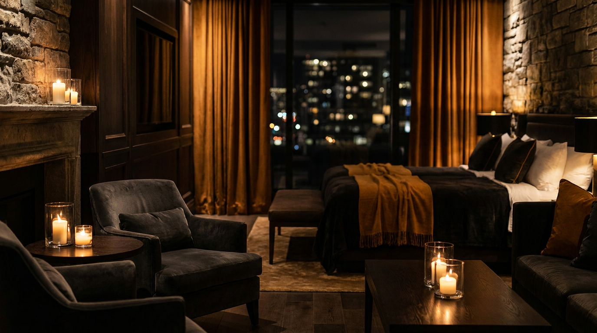

SHOCK

Tours inmersivos para hospedajes de lujo. Producción 100% remota, entrega en 72 horas.
Nuestro valor
Razones 01 — 02Convertimos tu propiedad en un recorrido cinematográfico continuo, a partir de material existente. Como el que se muestra a continuación.
Incluye textos informativos, detallando la propiedadGenerar confianza
+Un video cinematográfico comunica el nivel real de la propiedad antes de que el huésped llegue.
Facilitar reservas
+Las propiedades con mejor presentación visual reciben más reservas. El material entregado posiciona la propiedad por encima de su competencia directa.
Nuestro valor
Razones 03 — 04Optimizar recursos
+Un solo paquete funciona en todos los canales — Airbnb, Instagram, Facebook, sitio web. No se requiere producción adicional por plataforma.
Ahorrar tiempo
+El cliente envía su material y recibe todo listo en 72 horas. Sin sesiones de grabación, sin coordinación de equipos, sin edición adicional.
Lo que incluye
Incluido en los 3 planes, en distinto alcance-
01
El tour completo
+Un video cinematográfico continuo que recorre la propiedad de principio a fin. No una grabación genérica, sino una pieza que posiciona la propiedad en el nivel que merece.
-
02
Cada espacio, por separado
+Tomas sueltas individuales de cada ambiente destacado de la propiedad, listas para usarse en publicaciones, historias o campañas específicas por espacio.
-
03
Reels listos para publicar
+Piezas verticales optimizadas para Instagram y Facebook, en formato y duración adecuados para cada plataforma. El cliente las recibe listas para subir.
Cada entrega pasa por dirección de arte y edición cinematográfica real, potenciada con IA de video de última generación — no una plantilla automática, un resultado curado a mano.
Cómo se produce
Método, no automatización a ciegasEl cliente contacta
Selecciona su plan y realiza el primer contacto vía WhatsApp. Se coordina el alcance del proyecto y se confirma el 50% inicial para dar inicio.
Envía su material
Proporciona fotografías de los espacios a destacar, siguiendo una guía sencilla de ángulos e iluminación proporcionada previamente. No se requiere equipo profesional.
Se produce y ajusta
Con el material recibido se produce el video cinematográfico completo. El cliente revisa el resultado y aplica las rondas de ajustes incluidas en su plan.
Recibe todo listo
Videos, tomas sueltas y reels — listos para publicar. Se confirma el 50% restante contra entrega.
Preguntas
Antes de decidir-
01
¿Necesito equipo profesional?
+No se requiere equipo profesional. El material se produce a partir de fotografías tomadas por el propio cliente, siguiendo una guía sencilla de ángulos e iluminación proporcionada previamente. Todo el trabajo de cámara, movimiento y producción cinematográfica se realiza mediante tecnología especializada.
-
02
¿Cómo es la comunicación durante el proceso?
+Hay comunicación directa por WhatsApp durante todo el proceso, desde el primer contacto hasta la entrega final.
-
03
¿El pago es seguro?
+El pago se realiza en dos partes: un 50% al iniciar el proyecto y el 50% restante contra la entrega final. Se aceptan múltiples métodos de pago para mayor comodidad del cliente.
Planes
Tres nivelesChico
$125- Video cinematográfico de los espacios principales
- Tomas sueltas — un plano por espacio
- Reels detallados del video principal
- 1 ronda de ajustes
Mediano
$250- Video cinematográfico de espacios principales y amenidades destacadas
- Tomas sueltas con más de un ángulo por espacio
- Reels detallados de la propiedad completa
- 2 rondas de ajustes
Grande
$450- Video cinematográfico de la propiedad completa, con el modelo de IA más avanzado
- Tomas sueltas al mayor nivel de detalle, espacio por espacio
- Reels detallados de la propiedad completa, de cada toma suelta, y reel en formato especializado para Meta Ads
- 3 rondas de ajustes
¿Necesitás disponibilidad completa — video completo más tomas sueltas detalladas, 12 tomas o más, cadenas o varias propiedades? .